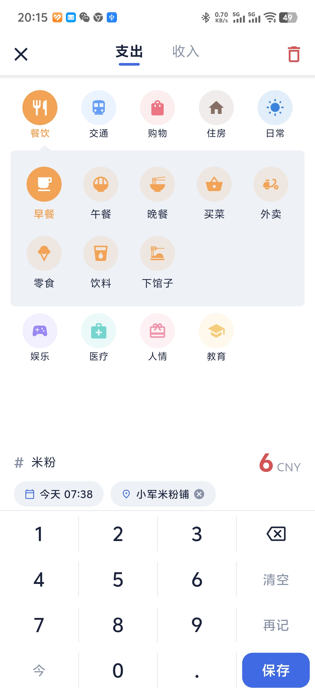
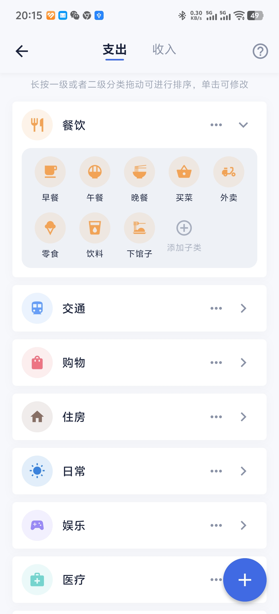
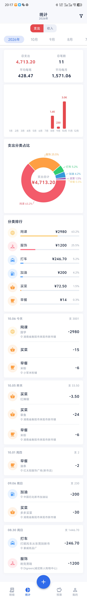
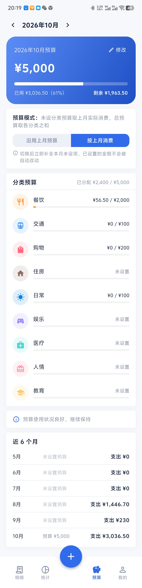
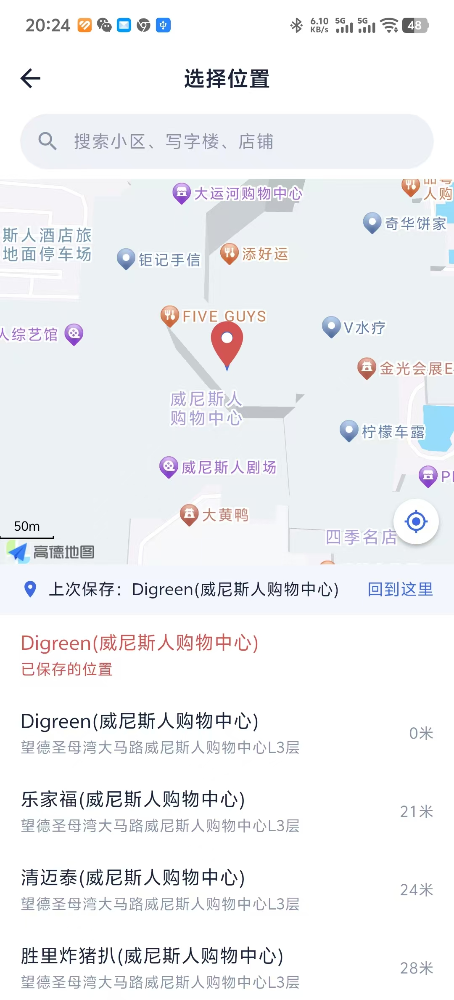
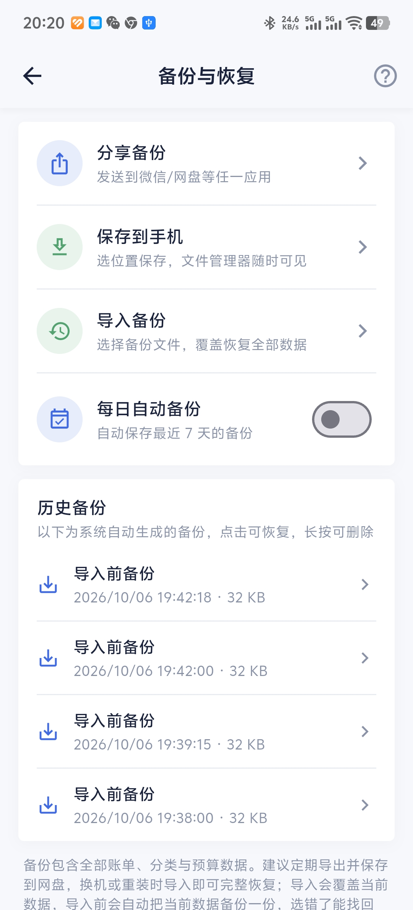

把"记下来"这件事做到最顺手，剩下的交给它。
金额、分类、备注三步以内完成，补记历史账单自动落到当天发生时刻的位置。
90+ 内置分类图标，支持自建分类组合图标库；标签让一笔账挂上多个维度。
按日 / 月 / 年多粒度看收支，分类占比、趋势一目了然，支持多条件筛选。
月度预算与超支提醒，花到哪了、还能花多少，随时心里有数。
记一笔时可选地图位置，事后按地点回忆这笔消费，经纬度仅存本地。
借入借出独立记录，与流水统一时间线展示，往来清晰。
数据全量导出为文件，随存随取；换机迁移不依赖任何云端账号。
无广告 SDK、不上传账单、离线可用；应用内更新带 SHA-256 校验。
界面干净，没有多余的东西。






账单只属于你。所有数据保存在手机本地的加密数据库中，应用没有任何广告 SDK，不请求多余权限，不收集、不上传任何账单信息。应用内更新从本站获取版本清单并校验 SHA-256，全程可审计（本项目开源，见下方 GitHub）。
完整记录见 CHANGELOG.md。